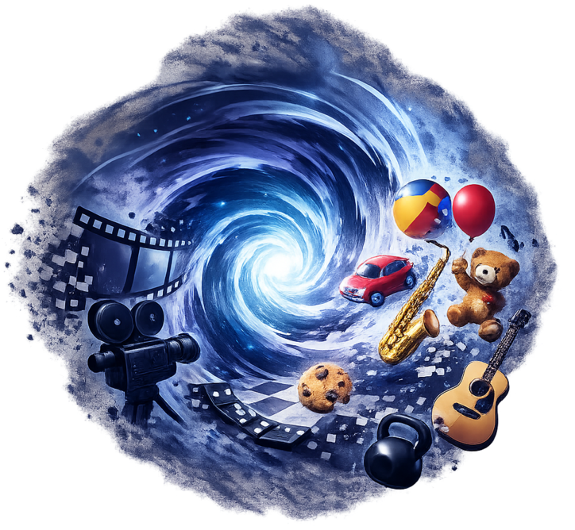
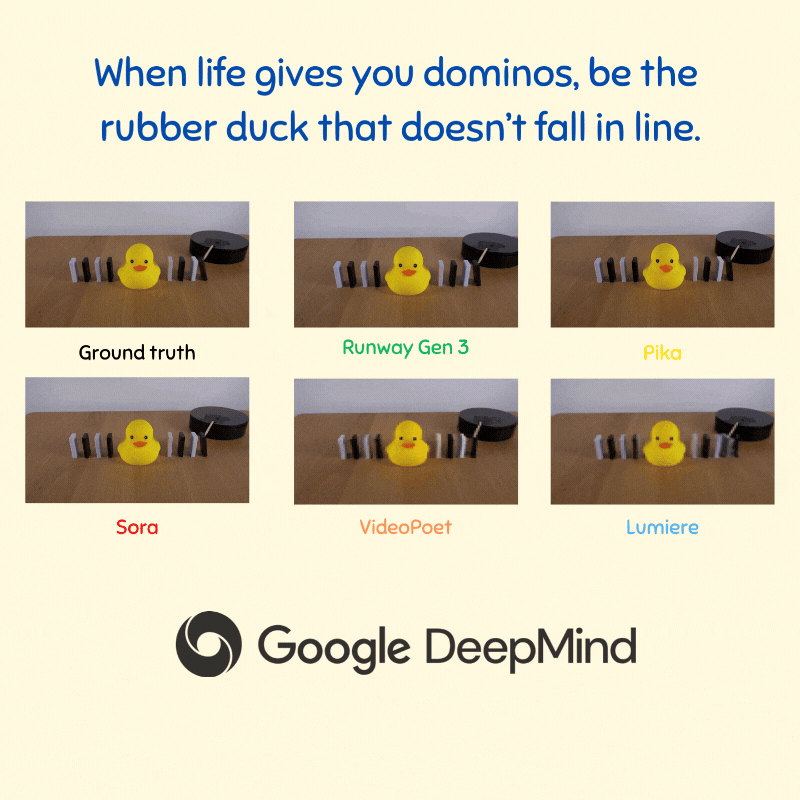
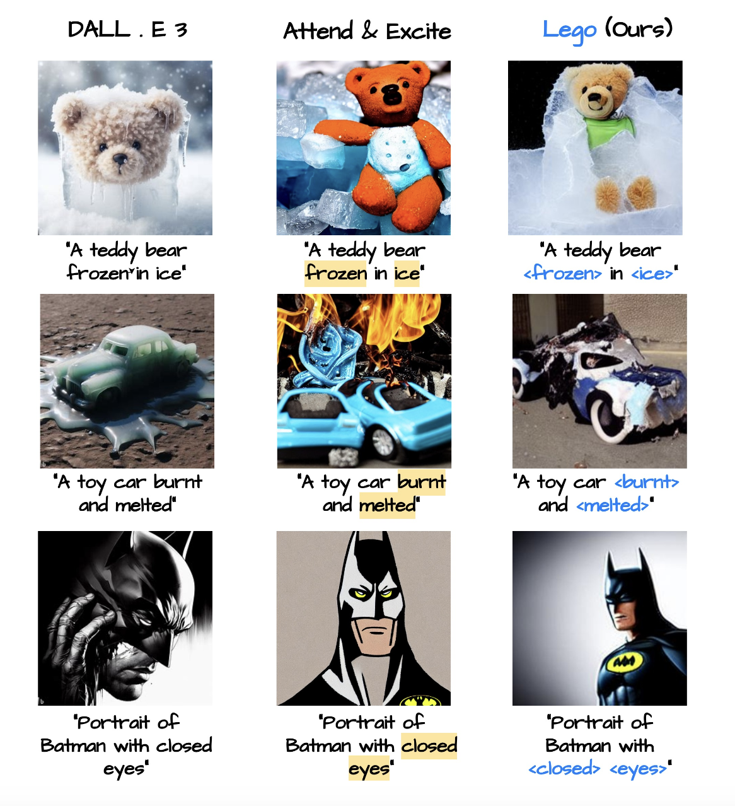
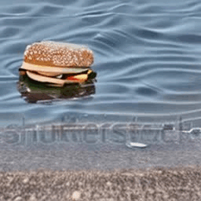
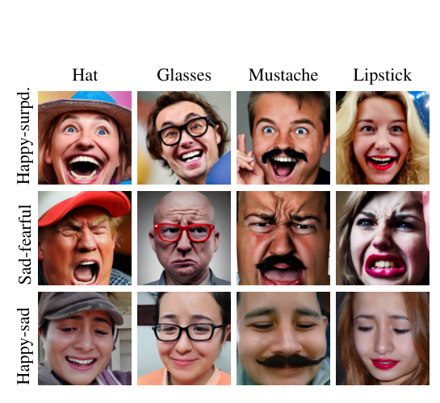
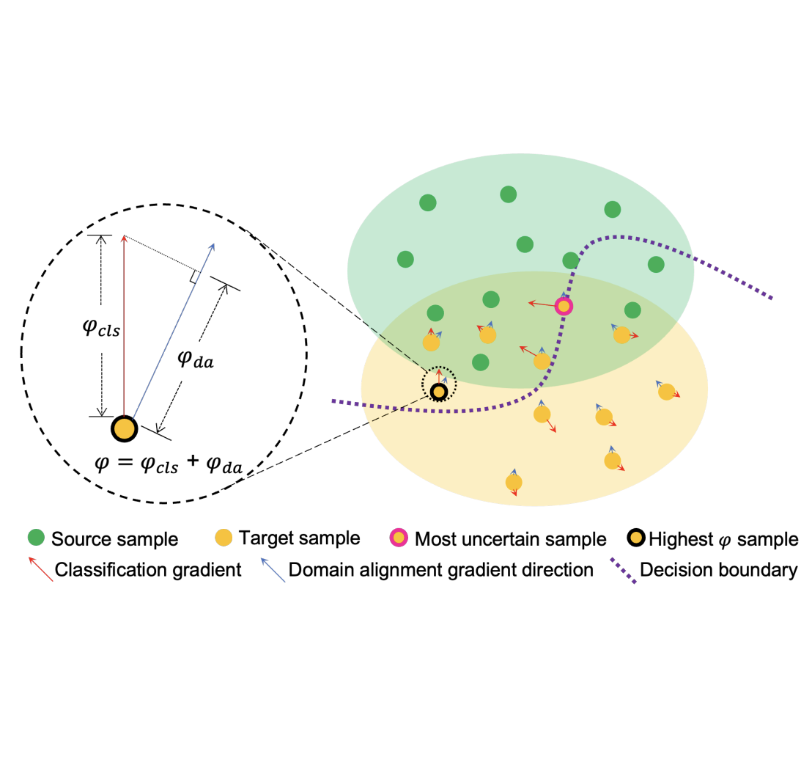
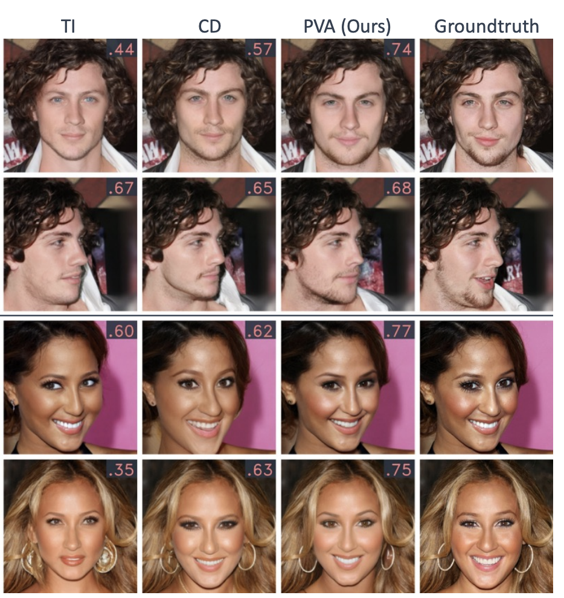
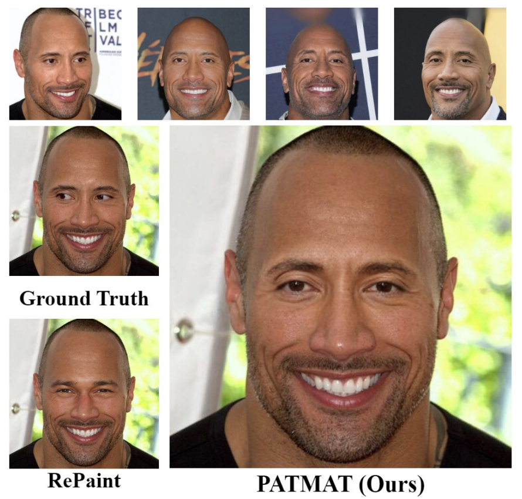
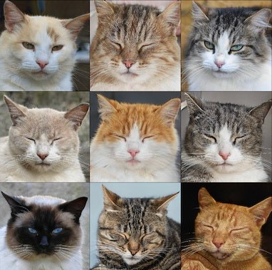

Sam Motamed
I am an ELLIS Ph.D. student at INSAIT where I am advised by Prof. Luc Van Gool and Dr. Iro Laina. Previously, I was a Machine Learning Researcher Intern at Netflix, and from May to November 2024, a Student Researcher at Google DeepMind in Toronto, working with Robert Geirhos.
Before my PhD journey began, I was a visiting researcher from 2021 to 2023 at CMU's Human Sensing Lab working with the amazing Fernando De La Torre. I also spent 7 wonderful years at the University of Toronto's Computer Science department where I earned my HBSc and MS degrees.


Research
I'm broadly interested in video generation and video-language models, with a current focus on improving their generation and understanding of physically plausible scenes. I also work on enabling user-intuitive control over generative models and adapting large vision and language models to solve personalized tasks using limited data. Relevant work is highlighted here.
Research Projects
- Physics Plausibility in Video Models: Improving how video generation and video-language models understand and produce physically plausible content.
- Generative Vision for Video Synthesis: Developing user-intuitive controls for generative video models to enable interactive and personalized content creation.
- Adaptation of Large Models: Adapting large-scale vision and language models to solve personalized tasks efficiently using limited data.
Publications

A benchmark of real videos for testing physics understanding of generative video models.

A benchmark of real videos for testing physics understanding of generative video models.
A recipe to make video language models better understand physics, and a rigorous benchmark to test VLMs on physics understanding.

A method for textual inversion of adjectives and verbs in text-to-image diffusion models.

Zero-shot control over object shape, position and movement in text-to-video models via cross-attention maps.

Fine-grained generation of expressions in conjunction with other textual inputs and offers a new label space for emotions at the same time.

A Multi-Target Active Domain Adaptation (MT-ADA) framework for image classification.

Fast, identity preserving face inpainting with diffusion models.

A tuning method for personalizing inpainting of the face and preserving the identity of a subject.

A framework for defining control over latent-based generative models.
Talks
Invited talks and presentations.